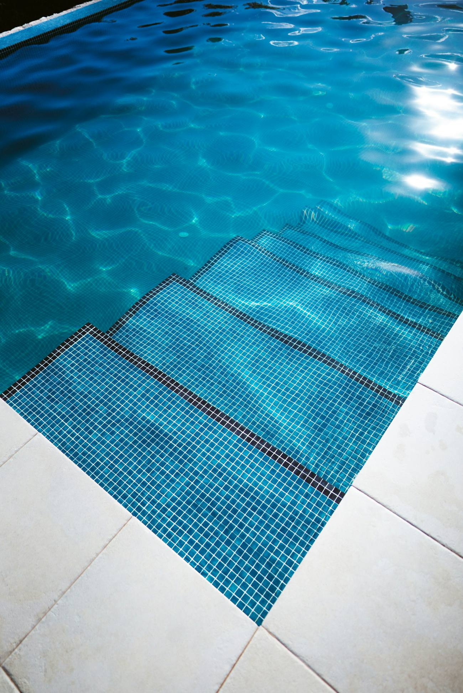
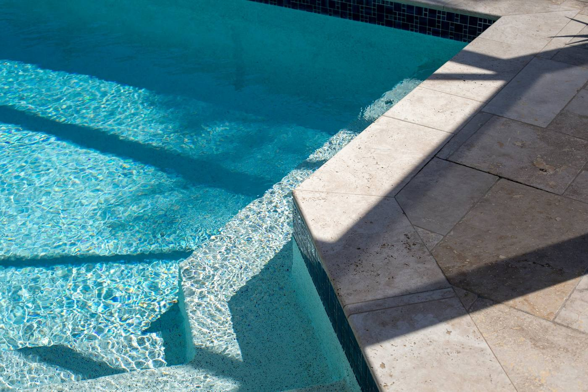
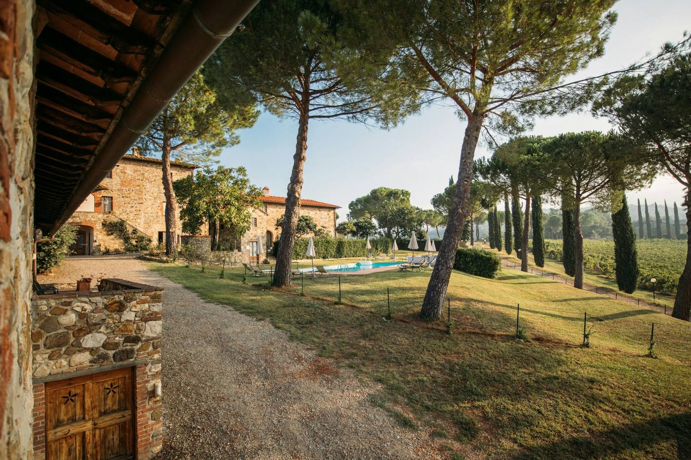

Construction sur mesure
Piscines traditionnelles maçonnées, de la conception à la mise en eau.
- Terrassement et excavation
- Maçonnerie, revêtement, carrelage
Pisciniste à Gignac-la-Nerthe et Marignane
Construction sur mesure, rénovation et aménagement autour du bassin. Une entreprise familiale, un seul interlocuteur, sans sous-traitance.

Photo d'illustration · Bruno van der Kraan, UnsplashLe métier
Chaque projet commence par un rendez-vous sur votre terrain, pour voir ce que l'espace permet et en parler avec vous. Le devis vient ensuite, détaillé.
Piscines traditionnelles maçonnées, de la conception à la mise en eau.
Rénovation partielle ou complète, et recherche de fuites.
Pool house et local technique sur mesure, abris bas, semi-hauts ou hauts.

Illustration · Brianna Lengacher, UnsplashJoints, skimmers, revêtement, reprise de maçonnerie : on liste avec vous ce qui doit être refait, et seulement ça.

Illustration · Rafael Peier, UnsplashUn pool house pour ranger et se mettre à l'ombre, un local technique qui protège les équipements, un abri pour prolonger la saison.
Le chantier
Une entreprise familiale de trois personnes. Vous parlez à la même personne du premier rendez-vous à la remise du chantier.
Avis Google
« Avec Paco et Mika ils font une équipe de choc pour un travail précis, soigné et rapide, le tout dans la bonne humeur. La rénovation de ma petite piscine biscornue est tout simplement splendide. »
« Suite à des fuites sur la bonde de fond, un skimmer et les joints du carrelage d'une piscine de plus de 30 ans, nous avons fait appel à S. Saulnier et son équipe dont l'intervention s'est parfaitement déroulée… »
Note, nombre d'avis et extraits lus sur la fiche Google « Saulnier Stéphane » le 11 novembre 2026. Extraits reproduits tels quels, noms abrégés.
Contact
2, impasse de Faucon
13180 Gignac-la-Nerthe
Horaires